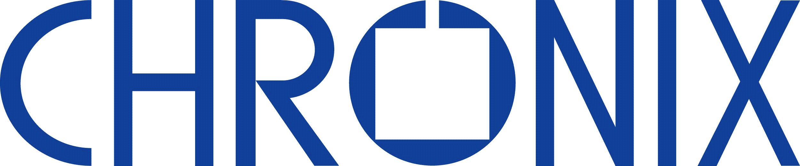
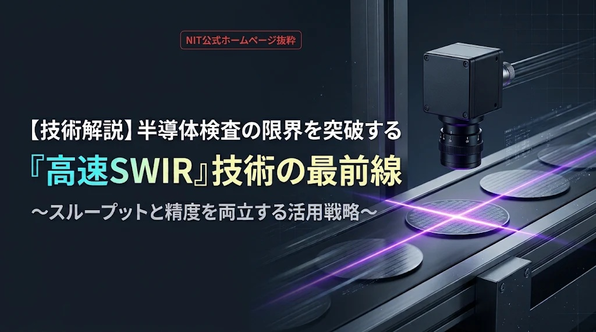

半導体製造ラインの高速化とプロセスの微細化が進む中、仏New Imaging Technologies（NIT）社は、優れた画質とスピードを両立する「高速SWIR（短波長赤外）カメラ」の重要性を説く技術レポートを公開しました。本記事では、公式発表の原文に基づき、インライン検査がもたらす歩留まり向上のメカニズムと、ラインスキャン・エリアスキャンの最適な使い分け戦略を紐解きます。
【NIT社 原文】【技術解説】"As inspection lines move toward higher speeds and smaller geometries, manufacturers require high-performance SWIR cameras (Line-scan, Area-scan) that can deliver excellent image quality, speed, and stability under demanding industrial conditions. ... NIT's high-speed SWIR cameras are built around proprietary InGaAs sensor technology designed for high sensitivity, low noise, and high dynamic range."
検査ラインの高速化とデバイスの微細化（Smaller geometries）が進むにつれ、産業用の過酷な条件下でも安定して高品質な画像を捉えるカメラが求められています。NIT社は、独自のInGaAs（インジウム・ガリウム・ヒ素）センサー技術により「高感度・低ノイズ・ハイダイナミックレンジ（HDR）」を実現。半導体製造に特有の高反射（High-reflectance）が混在する環境下でも、確実な微小欠陥（Micro-Defects）の検出を保証する基盤技術として位置づけています。
【NIT社 原文】【技術解説】"Detecting Micro-Defects with High-Speed SWIR Cameras:
- Bond and interconnect analysis: Inspecting layers and verifying bonding integrity.
- Encapsulation and packaging inspection: Identifying trapped particles or voids in encapsulant materials."
SWIRカメラが威力を発揮する具体的な検査工程として、以下が挙げられています。
【NIT社 原文】【技術解説】"Recommendation:
- Choose line-scan SWIR cameras for continuous, high-speed wafer or substrate inspection.
- Choose area-scan SWIR cameras for detailed defect review, lab analysis, or applications requiring high spatial resolution."
量産ラインの要件に合わせ、2つのカメラ方式を最適に選択することが推奨されています。
【NIT社 原文】【技術解説】"Boosting Yield and Quality Control. By integrating high-speed SWIR cameras into semiconductor inspection systems, manufacturers can detect hidden defects earlier in the process, reduce rework, and improve overall production yield. ... seeking to increase throughput while maintaining stringent quality standards."
高速SWIRカメラを半導体検査システムに統合する最大の目的は、「隠れた欠陥をプロセスのより早い段階で発見する（detect hidden defects earlier）」ことです。これにより、不良品が後工程へ流出するのを未然に防ぎ、無駄な手戻り（Rework）や廃棄ロスを削減します。厳しい品質基準をクリアしつつスループット（処理能力）を最大化し、工場全体の生産歩留まり（Yield）を劇的に引き上げる強力なインフラとして機能します。